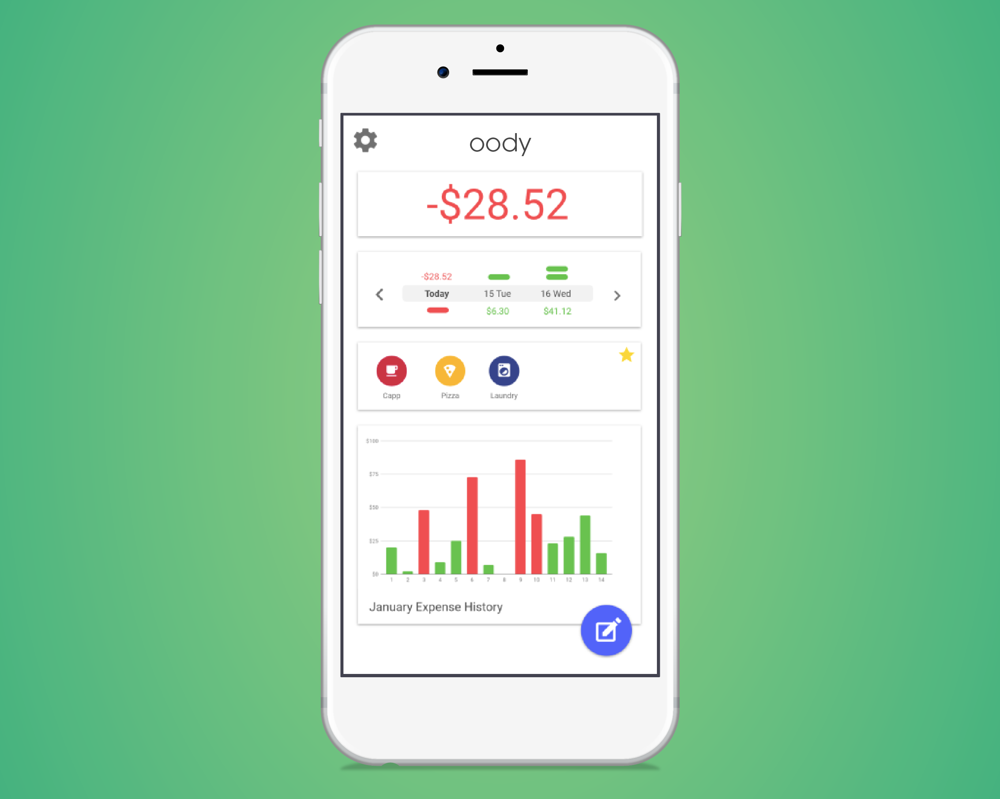

oody
Developing a new financing app for millenials
Overview
Our team is beginning to develop a financial budgeting app after conducting a competitive analysis of current financial apps, defining the vision of our product, and validating our identified assumptions.
My Budgeting Experience
I tried a number of different apps to assist me track my spendings, but I could never actually stick to using them. I finally found one that I don’t mind using, but it’s still lacking in what I’m looking for in a budgeting app. I have friends that share the same frustrations with budgeting apps, so we decided to make our own.
The Team
- Tech Lead
- Developer
- UX Lead (me)
Intro to oody
This is an app that makes managing your finances suck slightly less.
Once you enter your income, expenses, and how much you want to save, oody calculates your daily allowance of what you can afford to spend.
Whatever you don’t spend rolls over to the next day.
Competitive Analysis
Identifying Assumptions
Before we began forming hypotheses regarding design solutions, it was necessary to declare our assumptions up front and test those that present the highest risk.
- There are young people that want to manually track their finances as opposed to an automated solution, but they don't know where to start
- Budgeting can be intimidating for those that don't already
Research
- There are over 75 million millenials in the US, making up nearly a quarter of the population
- People tend to spend more money when they pay with a card
- 2 in 3 millenials admit impulse spending keeps them from achieving their financial goals
- Millennials display low levels of financial literacy, engage in problematic financial behaviors, and express concerns about their debt
- 67% of millenials that don’t save money say they can’t afford to
Conclusions
I found people who find value in setting a budget have success by doing it either manually, or with software that automates it for them. There are many free, automated money-saving apps, but the ones that promote their users to take control can be pricey for those with a low income—it seems likely there may be a link between habitual overspending, and lack of awareness of one's entire financial situation. On top of that, there is a large number of young people who don't budget because they don't believe it will be beneficial.
A critical factor of success for oody is to educate our potential users on the benefits of personally managing a budget.
Value Proposition
Product Vision
oody will give young people a fun, easy way to keep track of their finances
Hypothesis
We believe that building this solution will allow young people to become more cognizant of their spendings, and reduce the pains of budgeting
We will know we are successful when our users are continuously logging their transactions